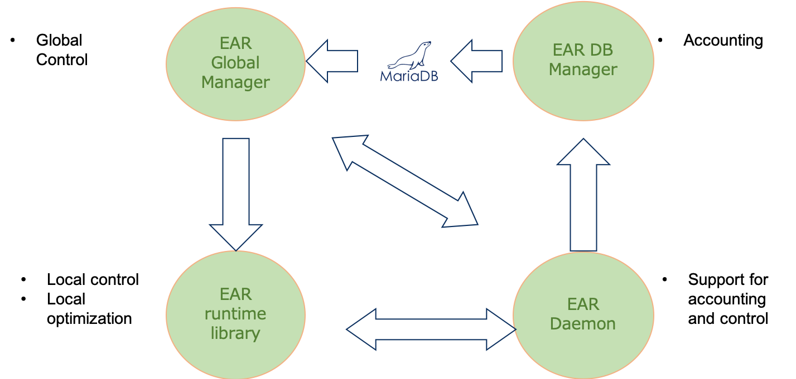

Energy Aware Runtime (EAR) package provides an energy management framework for super computers. EAR contains different components, all together provide three main services:
Energy Aware Runtime (EAR) package provides an energy management framework for super computers. EAR contains different components, all together provide three main services:
Visit the architecture page for a detailed description of each of these components.
EAR is an open source software and it is licensed under both the BSD-3 license for individual/non-commercial use and EPL-1.0 license for commercial use. Full text of both licenses can be found in COPYING.BSD and COPYING.EPL files.
Contact: ear-support@bsc.es
[[TOC]]
With EAR’s SLURM plugin, running an application with EAR is as easy as submitting a job with either srun, sbatch or mpirun. The EAR Library is automatically loaded with some applications when EAR is enabled by default.
You can type ear-info to see whether EAR is turned on by default. For other schedulers, a simple prolog/epilog command can be created to provide transparent job submission with EAR and default configuration.
EAR Library is automatically loaded with MPI applications when EAR is enabled by default (check ear-info). EAR supports the utilization of both mpirun/mpiexec and srun commands.
When using sbacth/srun or salloc, Intel MPI and OpenMPI are fully supported. When using specific MPI flavour commands to start applications (e.g., mpirun, mpiexec.hydra), there are some keypoints which you must take account. See next sections for examples and more details.
EAR Library automatically supports this use case. Check with the ear-info command if EAR library is on/off by default. If it’s off, use --ear=on option offered by EAR SLURM plugin to enable it. mpirun/mpiexec and srun are supported in the same manner as explained above.
EAR version 4.1 automatically executes the EAR Library with Python applications, so no action is needed. Check with the ear-info command if EAR library is on/off by default. If it’s off, use --ear=on option offered by EAR SLURM plugin to enable it.
EAR Library cannot detect automatically MPI symbols when Python is used. On that case, an environment variable used to specify which MPI flavour is provided. Export SLURM_EAR_LOAD_MPI_VERSION environment variable with either intel or open mpi values, e.g., export SLURM_EAR_LOAD_MPI_VERSION="open mpi", whose are the two MPI implementations 100% supported by EAR.
Check with the ear-info command if EAR library is on/off by default. If it’s off, use --ear=on option offered by EAR SLURM plugin to enable it.
To load the EAR Library automatically with non MPI applications it is required to have it compiled with dynamic symbols and also it must be executed with srun command. For example, for CUDA applications the --cudart=shared option must be used. EARL is loaded for OpenMP, MKL and CUDA programming models when symbols are dynamically detected.
For other programming models or sequential apps not supported by default, EARL can be forced to be loaded by setting SLURM_EAR_LOADER_APPLICATION enviroment variable, defined with the application name.
#!/bin/bash
export SLURM_EAR_LOADER_APPLICATION=my_app
srun my_appRunning MPI applications with EARL is automatic for SLURM systems when using srun. All the jobs are monitored by EAR and the Library is loaded by default depending on the cluster configuration. To run a job with srun and EARL there is no need to load the EAR module. Even though it is automatic, there are few flags than can be selected at job submission. When using slurm commands for job submission, both Intel and OpenMPI implementations are supported.
The following EAR options can be specified when running srun and/or sbatch, and are supported with srun/sbatch/salloc:
| Options | Description |
|---|---|
| --ear=[on|off] | Enables/disables EAR library loading with this job. |
| --ear-user-db=<filename> | Asks the EAR Library to generate a set of CSV files with EARL metrics. One file per node is generated with the average node metrics (node signature) and one file with multiple lines per node is generated with runtime collected metrics (loops node signatures). |
| --ear-verbose=[0|1] | Specifies the level of verbosity; the default is 0. Verbose messages are placed by default in stderr. For jobs with multiple nodes, this option can result in lots of messages mixed at stderr. You can set SLURM_EARL_VERBOSE_PATH environment variable and one file per node will be generated with EAR output. The environemnt variable must be set with the path (a directory) where you want the output files to be generated, it will be automatically created if needed. |
For more information consult srun --help output or see configuration options sections for more detailed description.
The EAR configuration files supports the specification of EAR authorized users, who can ask for a more privileged submission options. The most relevant ones are the possibility to ask for a specific optimisation policy and a specific CPU frequency. Contact with sysadmin or helpdesk team to become an authorized user.
--ear-policy=policy_name flag asks for policy_name policy. Type srun --help to see policies currently installed in your system.--ear-cpufreq=value (value must be given in kHz) asks for a specific CPU frequency.EAR version 3.4 and upwards supports GPU monitoring for NVIDIA devices from the point of view of the application and node monitoring. GPU frequency optimization is not yet supported. Authorized users can ask for a specific GPU frequency by setting the SLURM_EAR_GPU_DEF_FREQ environment variable, giving the desired GPU frequency expressed in kHz. Only one frequency for all GPUs is now supported. Contact with sysadmin or helpdesk team to become an authorized user.
To see the list of available frequencies of the GPU you will work on, you can type the following command:
nvidia-smi -q -d SUPPORTED_CLOCKSTo provide an automatic loading of the EAR library, the only requirement from the MPI library is to be coordinated with the scheduler.
Recent versions of Intel MPI offers two environment variables that can be used to guarantee the correct scheduler integrations:
I_MPI_HYDRA_BOOTSTRAP sets the bootstrap server. It must be set to slurm.I_MPI_HYDRA_BOOTSTRAP_EXEC_EXTRA_ARGS sets additional arguments for the bootstrap server. These arguments are passed to slurm.You can read here the Intel environment variables guide.
For OpenMPI and EAR it is highly recommened to use SLURM. When using mpirun, as OpenMPI is not fully coordinated with the scheduler, the EAR Library is not automatilly loaded on all the nodes. If mpirun is used, tEARL will be disabled and only basic energy metrics will be reported.
To use MPI with Python applications, the EAR Loader cannot automatically detect symbols to classify the application as Intel or OpenMPI. In order to specify it, the user has to define the SLURM_LOAD_MPI_VERSION environment variable with the values intel or open mpi. It is recommended to add in Python modules to make it easy for final users.
EAR uses the LD_PRELOAD mechanism to be loaded and the PMPI API for a transparent loading. In order to be compatible with other profiling libraries EAR is not replacing the MPI symbols, it just calls the next symbol in the list. So it is compatible with other tools or profiling libraries. In case of conflict, the EARL can be disabled by setting --ear=off flag at submission time.
srun examplesHaving an MPI application asking for one node and 24 tasks, the following is a simple case of job submission. If EAR library is turned on by default, no extra options are needed to load it. To check if it is on by default, load the EAR module and execute the ear-info command. EAR verbose is set to 0 by default (no messages).
srun -J test -N 1 -n 24 --tasks-per-node=24 applicationThe following executes the application showing EAR messages, including EAR configuration and node signature in stderr.
srun --ear-verbose=1 -J test -N 1 -n 24 --tasks-per-node=24 applicationEARL verbose messages are generated in the standard error. For jobs using more than 2 or 3 nodes messages can be overwritten. If the user wants to have EARL messages in a file the SLURM_EARL_VERBOSE_PATH environment variable must be set with a folder name. One file per node will be generated with EARL messages.
export SLURM_EARL_VERBOSE_PATH=logs
srun --ear-verbose=1 -J test -N 1 -n 24 --tasks-per-node=24 applicationThe following asks for EAR library metrics to be stored in csv file after the application execution. Two files per node will be generated: one with the average/global signature and another with loop signatures. The format of output files is <filename>.<nodename>.time.csv for the global signature and <filename>.<nodename>.time.loops.csv for loop signatures.
srun -J test -N 1 -n 24 --tasks-per-node=24 --ear-user-db=filename applicationFor EAR authorized users, the following executes the application with a CPU frequency of 2.0GHz:
srun --ear-cpufreq=2000000 --ear-policy=monitoring --ear-verbose=1 -J test -N 1 -n 24 --tasks-per-node=24 applicationFor --ear-cpufreq to have any effect, you must specify the --ear-policy option even if you want to run your application with the default policy.
sbatch + EARL + srunWhen using sbatch EAR options can be specified in the same way. If more than one srun is included in the job submission, EAR options can be inherited from sbatch to the different srun instances or they can be specifically modified on each individual srun.
The following example will execute twice the application. Both instances will have the verbosity set to 1. As the job is asking for 10 nodes, we have set the SLURM_EARL_VERBOSE_PATH environment variable set to the ear_log folder. Moreover, the second step will create a set of csv files placed in the ear_metrics folder. The nodename, Job Id and Step Id are part of the filename for a better identification.
#!/bin/bash
#SBATCH -N 1
#SBATCH -e test.%j.err
#SBATCH -o test.%j.out
#SBTACH --ntasks=24
#SBATCH --tasks-per-node=24
#SBATCH --cpus-per-task=1
#SBATCH --ear-verbose=1
export SLURM_EARL_VERBOSE_PATH=ear_logs
srun application
mkdir ear_metrics
srun --ear-user-db=ear_metrics/app_metrics applicationWhen running EAR with mpirun rather than srun, we have to specify the utilization of srun as bootstrap. Version 2019 and newer offers two environment variables for bootstrap server specification and arguments.
export I_MPI_HYDRA_BOOTSTRAP=slurm
export I_MPI_HYDRA_BOOTSTRAP_EXEC_EXTRA_ARGS="--ear-policy=monitoring --ear-verbose=1"
mpiexec.hydra -n 10 applicationBootstrap is an Intel® MPI option but not an OpenMPI option. For OpenMPI srun must be used for an automatic EAR support. In case OpenMPI with mpirun is needed, EAR offers the erun comman explained below.
erun is a program that simulates all the SLURM and EAR SLURM Plugin pipeline. You can launch erun with the --program option to specify the application name and arguments.
mpirun -n 4 /path/to/erun --program="hostname --alias"In this example, mpirun would run 4 erun processes. Then, erun would launch the application hostname with its alias parameter. You can use as many parameters as you want but the semicolons have to cover all the parameters in case there are more than just the program name. erun would simulate on the remote node both the local and remote pipelines for all created processes. It has an internal system to avoid repeating functions that are executed just one time per job or node, like SLURM does with its plugins.
> erun --help
This is the list of ERUN parameters:
Usage: ./erun [OPTIONS]
Options:
--job-id=<arg> Set the JOB_ID.
--nodes=<arg> Sets the number of nodes.
--program=<arg> Sets the program to run.
--clean Removes the internal files.
SLURM options:
...The --job-id and --nodes parameters create the environment variables that SLURM would have created automatically, because it is possible that your application make use of them. The --clean option removes the temporal files created to synchronize all ERUN processes.
Also you have to load the EAR environment module or define its environment variables in your environment or script:
| Variable | Parameter |
|---|---|
| EAR_INSTALL_PATH=<path> | prefix=<path> |
| EAR_TMP=<path> | localstatedir=<path> |
| EAR_ETC=<path> | sysconfdir=<path> |
| EAR_DEFAULT=<on/off> | default=<on/off> |
The eacct command shows accounting information stored in the EAR DB for jobs (and step) IDs. The command uses EAR’s configuration file to determine if the user running it is privileged or not, as non-privileged users can only access their information. It provides the following options. The ear module needs to be loaded to use the eacct command.
Usage: eacct [Optional parameters]
Optional parameters:
-h displays this message
-v displays current EAR version
-b verbose mode for debugging purposes
-u specifies the user whose applications will be retrieved. Only available to privileged users. [default: all users]
-j specifies the job id and step id to retrieve with the format [jobid.stepid] or the format [jobid1,jobid2,...,jobid_n].
A user can only retrieve its own jobs unless said user is privileged. [default: all jobs]
-a specifies the application names that will be retrieved. [default: all app_ids]
-c specifies the file where the output will be stored in CSV format. [default: no file]
-t specifies the energy_tag of the jobs that will be retrieved. [default: all tags].
-l shows the information for each node for each job instead of the global statistics for said job.
-x shows the last EAR events. Nodes, job ids, and step ids can be specified as if were showing job information.
-m prints power signatures regardless of whether mpi signatures are available or not.
-r shows the EAR loop signatures. Nodes, job ids, and step ids can be specified as if were showing job information.
-n specifies the number of jobs to be shown, starting from the most recent one. [default: 20][to get all jobs use -n all]
-f specifies the file where the user-database can be found. If this option is used, the information will be read from the file and not the database.The basic usage of eacct retrieves the last 20 applications (by default) of the user executing it. If a user is privileged, it may see all users applications. The default behaviour shows data from each job-step, aggregating the values from each node in said job-step. If using SLURM as a job manager, a sb (sbatch) job-step is created with the data from the entire execution. A specific job may be specified with -j option: - [user@host EAR]$ eacct -> Shows last 20 jobs (maximum) executed by the user. - [user@host EAR]$ eacct -j 175966 –> Shows data for jobid = 175966. Metrics are averaged per job.stepid. - [user@host EAR]$ eacct -j 175966.0 –> Shows data for jobid = 175966 stepid=0. Metrics are averaged per job.stepid. - [user@host EAR]$ eacct -j 175966,175967,175968 –> Shows data for jobid= 175966, 175967, 175968 Metrics are averaged per job.stepid.
eacct shows a pre-selected set of columns. Some flags sligthly modifies the set of columns reported: - JOB-STEP: JobID and Step ID. sb is shown for the sbatch. - USER: Username who executed the job. - APP=APPLICATION: Job’s name or executable name if job name is not provided. - POLICY: Energy optimization policy name (MO = Monitoring). - NODES: Number of nodes which ran the job. - AVG/DEF/IMC(GHz): Average CPU frequency, default frequency and average uncore frequency. Includes all the nodes for the step. In KHz. - TIME(s): Step execution time, in seconds. - POWER: Average node power including all the nodes, in Watts. - GBS: CPU Main memory bandwidth (GB/second). Hint for CPU/Memory bound classification. - CPI: CPU Cycles per Instruction. Hint for CPU/Memory bound classification. - ENERGY(J): Accumulated node energy. Includes all the nodes. In Joules. - GFLOPS/WATT : CPU GFlops per Watt. Hint for energy efficiency. - IO(MBs) : IO (read and write) Mega Bytes per second. - MPI% : Percentage of MPI time over the total execution time. It’s the average including all the processes and nodes. - GPU metrics - G-POW (T/U) : Average GPU power. Accumulated per node and average of all the nodes. - T = Total (GPU power consumed even if the process is not using them). - U = GPUs used by the job. - G-FREQ : Average GPU frequency. Per node and average of all the nodes. - G-UTIL(G/MEM) : GPU utilization and GPU memory utilization.
For node-specific information, the -l option provides detailed accounting of each individual node: - [user@host EAR]$ eacct -j 175966 -l –> Shows per-node data for jobid=175966. - [user@host EAR]$ eacct -j 175966.0 -l –> Shows per-node data for jobid=175966, stepid=0.
One additional column is shown: the VPI. The VPI is the percentage of AVX512 instructions over the total number of instructions.
For runtime data (EAR loops) one may retrieve them with -r. Both Job Id and Step Id filtering works: - [user@host EAR]$ eacct -j 175966.1 -r –> shows metrics reported at runtime by the EAR library for jobid=175966 , stepid=1.
To easily transfer eacct’s output, -c option saves it in .csv format. Both aggregated and detailed accountings are available, as well as filtering: - [user@host EAR]$ eacct -j 175966 -c test.csv –> adds to file test.csv all the metrics in EAR DB for jobid=175966. Metrics are averaged per application. - [user@host EAR]$ eacct -j 175966.1 -c -l test.csv –> adds to file test.csv all the metrics in EAR DB for jobid=175966, stepid= 1. Metrics are per-node. - [user@host EAR]$ eacct -j 175966.1 -c -r test.csv –> adds to file test.csv all the metrics in EAR DB for jobid=175966, stepid= 1. Metrics are per loop and node.
When using the -c option, all the metrics available in the EAR DB are reported.
EAR library is automatically loaded with some programming models (MPI, MKL, OpenMP and CUDA). For applications not executed with the EARL loaded -for example, when srun is not used or programming models or applications not loaded by default by the EAR library- EAR provides a default monitoring. In this case a subset of metrics will be reported. In particular: - accumulated DC energy(J) - accumulated DRAM energy(J) - accumulated CPU PCK energy(J) - EDP - maximum DC power detected(W) - minimum DC power detected(W) - execution time (in sec) - CPU average frequency (kHz) - CPU default frequency(KHz).
DC node energy includes the CPU and GPU energy if there are. These metrics are reported per node and jobid and stepid, so they can be seen per job and job and step when using eacct.
[[TOC]]
EAR is composed of five main components: - Node Manager (EARD). The Node Manager must have root access to the node where it will be running. - Database Manager (EARDBD). The database manager requires access to the DB server (we support MariaDB and Postgress). Documentation for Postgress is still under development. - Global Manager (EARGM). The global manager needs access to all node managers in the cluster as well as access to database. - Library (EARL) - SLURM plugin
The following image shows the main interactions between components:

For a more detailed information about EAR components, visit the Architecture page.
This section provides a, summed up, step by step installation and execution guide for EAR. For a more in depth explanation of the necessary steps see the Installation from source page or the Installing from RPM section, following the Configuration guide, or contact us at ear-support@bsc.es
Requirements to compile EAR are: - C compiler. - MPI compiler. - CUDA installation path if NVIDIA is used. - Likwid path if Likwid is used. - Freeipmi path if freeipmi is used. - GSL is needed for coefficient computations.
To install EAR from rpm (only binaries) all these dependencies have been removed except mysqlclient. However, they are needed when running EAR.
SLURM must also be present if the SLURM plugin wants to be used. Since current EAR version only supports automatic execution of applications with EAR library using the SLURM plugin, it must be running when EAR library wants to be used (not needed for node monitoring).
Lastly, but not less important: - The drivers for CPU frequency management (acpi-cpufreq) and Open IPMI must be present and loaded in compute nodes. - msr kernel module must be loaded in compute nodes. - mariaDB or postgress server must be up and running. - Hardware counters must be accessible for normal users. Set /proc/sys/kernel/perf_event_paranoid to 2 (or less). Type sudo sh -c "echo 2 > /proc/sys/kernel/perf_event_paranoid" in compute nodes.
Run ./configure --help to see all the flags and options.
Once downloaded the code from repository, execute: - autoreconf -i.
./configure --prefix=ear-install-path \
EAR_TMP=ear-tmp-path \EAR_ETC=ear-etc-path \
CC=c-compiler-path \
MPICC=mpi-compiler-path \
CC_FLAGS=c-flags-compiler \
MPICC_FLAGS=mpi-flags \
--with-cuda=path-to-cuda \
MAKE_NAME=make_extension`Additionally to the Makefile, MAKE_NAME forces to copy the generated Makefile with the name Makefile._make_extension_. It simplifies the fact of having multiple configurations (1 for each library version needed). More relevant options are: - The option --disable-mpi must be set to generate a configuration for non-MPI version of the library. - Use MPI_VERSION=ompi for OpenMPI compatible version.
Before running make, review the Makefile and the configuration log to validate all the requirements of your installation have been automatically detected. In particular, if you need to use some specific library such likwid, freeipmi or CUDA. If CUDA path is specified, EAR will be compiled with GPU support. Check also that MySQL ot PostgreSQL paths have been detected. You can use options USER and GROUP if you want to install EAR with a special USER/GROUP.
The following shows how to configure EAR to be compiled with Intel MPI:
autoreconf -i
./configure --prefix=/opt/ear CC=icc MPICC=mpiic MAKE_NAME=impi
make -f Makefile.impi
make -f Makefile.impi install
make -f Makefile.impi doc.install
make -f Makefile.impi etc.installAt this point the EAR binaries will be installed including one version of the EAR library for MPI (default), EAR documentation, EAR service files for EAR daemons and templates for ear.conf files and SLURM plugin. The configure tool tries to automatically detect paths to mysql and/or postgress, scheduler sources, etc. It is mandatory to detect the scheduler path, by default SLURM is assumed. After the configure, check in the Makefile all the options have been detected. After the make install, you should have the following folders in the ear-install-path: bin, sbin, etc, lib, include, man. The bin directory includes commands and tools, the sbin includes EAR services, the lib includes all the libraries and plugins, and etc includes templates and examples for EAR service files, ear.conf file, the EAR module, etc.
Prepare the configuration
Either installing from sources or rpm, EAR installs a template for ear.conf file in $EAR_ETC/ear/ear.conf.template and $EAR_ETC/ear/ear.conf.full.template. The full version includes all fields. Copy only one as $EAR_ETC/ear/ear.conf and update with the desired configuration. Go to the configuration section to see how to do it. The ear.conf is used by all the services. It is recommended to have in a shared folder to simplify the changes in the configuration.
EAR module
Install and load EAR module to enable commands. It can be found at $EAR_ETC/module. You can add ear module whan it is not in standard path by doing module use $EAR_ETC/module and then module load ear.
EAR Database Create EAR database with edb_create, installed at $EAR_INSTALL_PATH/sbin. The edb_create -p command will ask you for the DB root password. If you get any problem here, check first whether the node where you are running the command can connect to the DB server. In case problems persists, execute edb_create -o to report the specific SQL queries generated. In case of trouble, contact with ear-support@bsc.es or open in issue.
Energy models
EAR uses a power and performance model based on systems signatures. These system signatures are stored in coefficient files.
Before starting EARD, and just for testing, it is needed to create a dummy coefficient file and copy in the coefficients path, by default placed at$EAR_ETC/coeffs. Use the coeffs_null application from tools section.
EAR version 4.1 does not require null coefficients.
EAR services
Create soft links or copy EAR service files to start/stop services using system commands such as systemctl in the services folder. EAR service files are generated at $EAR_ETC/systemd and they can usually be placed in $(ETC)/systemd.
Enable and start EARDs and EARDBDs via services (e.g., sudo systemctl start eard, sudo systemctl start eardbd). EARDBD and EARD outputs can be found at $EAR_TMP/eardbd.server.log and $EAR_TMP/eard.log respectively when DBDaemonUseLog and NodeUseLog options are set to 1 in the ear.conf file, respectively. Otherwise, their outputs are generated at stderr and can be seen using the journalctl command (i.e., journalctl -u eard).
By default, a certain level of verbosity is set. It is not recommended to modify it but you can change it by modifying the value of constants in file src/common/output/output_conf.h.
Quick validation
Check that EARDs are up and running correctly with econtrol --status (note that daemons will take around a minute to correctly report energy and not show up as an error in econtrol). EARDs create a per-node text file with values reported to the EARDBD (local to compute nodes). In case there are problems when running econtrol, you can also find this file at $EAR_TMP/nodename.pm_periodic_data.txt.
Check that EARDs are reporting metrics to database with ereport. ereport -n all should report the total energy sent by each daemon since the setup.
$EAR_ETC/slurm/ear.plugstack.conf file in the /etc/slurm/plugstack.conf.d directory to simplify the EAR plugin management.For a first test it is recommened to set
default=offin theear.plugstack.conf(to disable the automatic loading of the EAR library).
EAR plugin validation
At this point you must be able to see EAR options when doing, for example, srun --help. You must see something like below as part of the output. The EAR plugin must be enabled at login and compute nodes.
[user@hostname ~]$ srun --help
Usage: srun [OPTIONS(0)... [executable(0) [args(0)...]]] [ : [OPTIONS(N)...]] executable(N) [args(N)...]
Parallel run options:
...
Constraint options:
...
Consumable resources related options:
...
Affinity/Multi-core options: (when the task/affinity plugin is enabled)
...
Options provided by plugins:
--ear=on|off Enables/disables Energy Aware Runtime Library
--ear-policy=type Selects an energy policy for EAR
{type=default,gpu_monitoring,monitoring,min_energ-
y,min_time,gpu_min_energy,gpu_min_time}
--ear-cpufreq=frequency Specifies the start frequency to be used by EAR
policy (in KHz)
--ear-policy-th=value Specifies the threshold to be used by EAR policy
(max 2 decimals) {value=[0..1]}
--ear-user-db=file Specifies the file to save the user applications
metrics summary 'file.nodename.csv' file will be
created per node. If not defined, these files
won't be generated.
--ear-verbose=value Specifies the level of the
verbosity{value=[0..1]}; default is 0
--ear-learning=value Enables the learning phase for a given P_STATE
{value=[1..n]}
--ear-tag=tag Sets an energy tag (max 32 chars)
...
Help options:
-h, --help show this help message
--usage display brief usage message
Other options:
-V, --version output version information and exit
eacct command.Note that only privileged users can check other users’ applications.
--ear=on and check that now the output of eacct includes the Library metrics.default=on to set the EAR Library loading by default at ear.plugstack.conf. If default is turned off, EARL can be explicitly loaded by setting the flag --ear=off at job submission.At this point, you can use EAR for monitoring and accounting purposes but it cannot use the power policies offered by EARL. To enable them, first perform a learning phase and compute node coefficients. See the EAR learning phase wiki page. For the coefficients to be active, restart daemons.
Important Reloading daemons will NOT make them load coefficients, restarting the service is the only way.
As commented in the overview, the EAR Library is loaded next to the user MPI application by the EAR Loader. The Library uses MPI symbols, so it is compiled by using the includes provided by your MPI distribution. The selection of the library version is automatic at runtime, but it is not required during the compilation and installation steps. Each compiled library version has its own file name that has to be defined by the MPI_VERSION variable during the ./configure or by editing the root Makefile.
The name list per distribution is exposed in the following table:
| Distribution | Name | MPI_VERSION value |
|---|---|---|
| Intel MPI | libear.so (default) | not required |
| MVAPICH | libear.so (default) | not required |
| OpenMPI | libear.ompi.so | ompi |
If different MPI distributions share the same library name, it means their symbols are compatible between them, so compiling and installing the library one time will be enough. However, if you provide different MPI distributions to users, you will have to compile and install the library multiple times.
EAR makefiles include a specific target for each EAR component, supporting full or partial updates:
| Command | Description |
|---|---|
make -f Makefile.make_extension install |
Reinstall all the files except etc and doc. |
make -f Makefile.make_extension earl.install |
Reinstall only the EARL. |
make -f Makefile.make_extension eard.install |
Reinstall only the EARD. |
make -f Makefile.make_extension earplug.install |
Reinstall only the EAR SLURM plugin. |
make -f Makefile.make_extension eardbd.install |
Reinstall only the EARDBD. |
make -f Makefile.make_extension eargmd.install |
Reinstall only the EARGMD. |
make -f Makefile.make_extension reports.install |
Reinstall only report plugins. |
Before compiling new libraries you have to install by typing make install. Then you can run the ./configure again, changing the MPICC, MPICC_FLAGS and MPI_VERSION variables, or just opening the root Makefile and edit the same variables and MPI_BASE, which just sets the MPI installation root path. Now type make full to perform a clean compilation and make earl.install, to install only the new version of the library.
If your MPI version is not fully compatible, please contact ear-support@bsc.es.
See the User guide to check the use cases supported and how to submit jobs with EAR.
EAR includes the specification files to create an rpm from an already existing installation. The spec file is placed at etc/rpms. To create the RPM it is needed a valid installation from source. The RPM can be part of the system image. Visit the Requirements page for a quick overview of the requirements.
Execute the rpmbuild.sh script to create the EAR rpm file. Once created, it can be included in the compute nodes images. It is recommened only when no more changes are expected on the installation. Once you have the rpm file, execute the following steps: - Before the installation, make sure the installation path is accessible by all the computing nodes. Do the same in the folder where you want to set the temporary files (it will be called $(EAR_TMP) in this guide for simplicity). - Default paths are /usr and /etc. - Run rpm -ivh --relocate /usr=/new/install/path --relocate /etc=/new/etc/path ear.version.rpm.
You can also use the
--nodepsif your dependency test fails.
*.in are compiled to the ready to use version, replacing tags for correct paths. You will have more information of those files in the following pages. Check the next section for more information.rpm -e ear.version to uninstall.The *.in configuration files are compiled into etc/ear/ear.conf.template and etc/ear/ear.full.conf.template, etc/module/ear, etc/slurm/ear.plugstack.conf and various etc/systemd/ear*.service. You can find more information in the configuration page. Below table describes the complet heriarchy of the EAR installation:
| Directory | Content / description |
|---|---|
/usr/lib |
Libraries and the scheduler plugin. |
/usr/lib/plugins |
EAR plugins. |
/usr/bin |
EAR commands. |
/usr/bin/tools |
EAR tools for coefficients computation. |
/usr/sbin |
Privileged components: EARD, EARDBD, EARGMD. |
/etc/ear |
Configuration files templates. |
/etc/ear/coeffs |
Folder to store coefficient files. |
/etc/module |
EAR module. |
/etc/slurm |
EAR SLURM plugin configuration file. |
/etc/systemd |
EAR service files. |
For a better overview of the installation process, return to the installation guide. To continue the installation, visit the configuration page to set up properly the EAR configuration file and the EAR SLURM plugin stack file.
[[TOC]]
EAR’s daemon is a per-node process that provides privileged metrics of each node as well as a periodic power monitoring service. Said periodic power metrics are sent to EAR’s database either directly or via the database daemon (see the configuration page).
For more information, see EARD.
The database daemon acts as an intermediate layer between any EAR component that inserts data and the EAR’s database, in order to prevent the database server from collapsing due to getting overrun with connections and insert queries.
For more information, see EARDBD.
EAR’s Global Manager Daemon (EARGMD) is a cluster wide component that controls the percentage of the maximum energy consumed.
For more information, see EARGM.
The EAR Library is the core of the EAR package. The EARL offers a lightweight and simple solution to select the optimal frequency for MPI applications at runtime, with multiple power policies each with a different approach to find said frequency. EARL uses the daemon to read performance metrics and to send application data to EAR’s database.
For more information about the library itself, see EARL. You can also read about EAR policies and the EAR API to use EAR as a third party library in you application.
The EAR Loader is the responsible for loading the EAR Library. It is a small and lightweight library loaded by the EAR SLURM Plugin that identifies the user application and loads its corresponding EAR Library distribution.
For more information, see EARLo.
EAR SLURM plugin allows to dynamically load and configure the EAR library for the SLURM jobs, if the enabling argument is set or is enabled by default. Additionally, it reports any jobs that start or end to the nodes’ EARDs for accounting and monitoring purposes.
For more information, see SLURM Plugin.
EAR requires some third party libraries and headers to compile and run, in addition to the basic requirements such as the compiler and Autoconf. This is a list of these libraries, minimum tested versions and its references:
| Library | Minimum version | References |
|---|---|---|
| MPI | - | - |
| MySQL* | 15.1 | MySQL or MariaDB |
| PostgreSQL* | 9.2 | PostgreSQL |
| Autoconf | 2.69 | Website |
| GSL | 1.4 | Website |
* Just one of them required.
These libraries are not required, but can be used to get additional functionality or metrics:
| Library | Minimum version | References |
|---|---|---|
| SLURM | 17.02.6 | Website |
| PBS** | 2021 | PBSPro or OpenPBS |
| CUDA/NVML | 7.5 | CUDA |
| CUPTI** | 7.5 | CUDA |
| Likwid | 5.2.1 | Likwid |
| FreeIPMI | 1.6.8 | FreeIPMI |
| OneAPI/L0** | 1.7.9 | OneAPI |
| LibRedFish** | 1.3.6 | LibRedFish |
** These will be available in next release.
Also, some drivers has to be present and loaded in the system:
| Driver | File | Kernel version | References |
|---|---|---|---|
| CPUFreq | kernel/drivers/cpufreq/acpi-cpufreq.ko | 3.10 | Information |
| Open IPMI | kernel/drivers/char/ipmi/*.ko | 3.10 | Information |
Lastly, the compilers: EAR uses C compilers. It has been tested with both Intel and GNU.
| Compiler | Comment | Minimum version | References |
|---|---|---|---|
| GNU Compiler Collection (GCC) | For the library and daemon | 4.8.5 | Website |
| Intel C Compiler (ICC) | For the library and daemon | 17.0.1 | Website |
$(EAR_ETC) in this guide for simplicity).configure program by typing autoreconf -i.configure parameters../configure ..., make and make install in the root directory.make etc.install to install the content of $(EAR_ETC). It is the configuration content, but that configuration will be expanded in the next section. You have a link at the bottom of this page.configure is based on shell variables which initial value could be given by setting variables in the command line, or in the environment. Take a look to the table with the most popular variables:
| Variable | Description |
|---|---|
| MPICC | MPI compiler. |
| CC | C compiler command. |
| MPICC_FLAGS | MPI compiler flags. |
| CFLAGS | C compiler flags. |
| CC_FLAGS | Also C compiler flags. |
| LDFLAGS | Linker flags. E.g. ‘-L<lib dir>’ if you have libraries in a nonstandard directory <lib dir>. |
| LIBS | Libraries to pass to the linker. E.g. ‘-l |
| EAR_TMP | Defines the node local storage as ‘var’, ‘tmp’ or other tempfs file system (default: /var/ear) (you can alo use –localstatedir=DIR). |
| EAR_ETC | Defines the read-only single-machine data as ‘etc’ (default: EPREFIX/etc) (you can also use –sharedstatedir=DIR). |
| MAN | Defines the manual directory (default: PREFIX/man) (you can use also –mandir=DIR). |
| DOC | Defines the documentation directory (default: PREFIX/doc) (you can use also –docdir=DIR). |
| MPI_VERSION | Adds a suffix to the compiled EAR library name. Read further down this page for more information. |
| USER | Owner user of the installed files. |
| GROUP | Owned group of the installed files |
| MAKE_NAME | It adds an additional Makefile with a suffix. |
CC, CFLAGS and DEBUG variables overwriting: ./configure CC=icc CFLAGS=-g EAR_ETC=/hpc/opt/etcYou can choose the root folder by typing ./configure --PREFIX=<path>. But there are other options in the following table:
| Definition | Default directory | Content / description |
|---|---|---|
| <PREFIX> | /usr/local | Installation path |
| <EAR_ETC> | <PREFIX>/etc | Configuration files. |
| <EAR_TMP> | /var/ear | Pipes and temporal files. |
You have more installation options information by typing ./configure --help. If you want to change the value of any of this options after the configuration process, you can edit the root Makefile. All the options are at the top of the text and its names are self-explanatory.
The configure script is capable to find libraries located in custom location if a module is loaded in the environment or its path is included in LD_LIBRARY_PATH. If not, you can help configure to find SLURM, or other required libraries in case you installed in a custom location. It is necessary to add its root path for the compiler to see include headers and libraries for the linker. You can do this by adding to it the following arguments:
| Argument | Description |
|---|---|
| –with-cuda=<path> | Specifies the path to CUDA installation. |
| –with-freeipmi=<path> | Specify path to FREEIPMI installation. |
| –with-gsl=<path> | Specifies the path to GSL installation. |
| –with-likwid=<path> | Specifies the path to LIKWID installation. |
| –with-mysql=<path> | Specify path to MySQL installation. |
| –with-pgsql=<path> | Specify path to PostgreSQL installation. |
| –with-pbs | Enable PBS components. |
| –with-slurm=<path> | Specifies the path to SLURM installation. |
CC overwriting the CUDA path specification:./configure --with-cuda=/path/to/CUDAIf unusual procedures must be done to compile the package, please try to figure out how configure could check whether to do them and contact the team to be considered for the next release. In the meantime, you can overwrite shell variables or export its paths to the environment (e.g. LD_LIBRARY).
Also, there are additional flags to help administrator increase the compatibility of EAR in nodes.
| Argument | Description |
|---|---|
| –disable-rpath | Disables the RPATH included in binaries to specify some dependencies location. |
| –disable-avx512 | Replaces the AVX-512 function calls by AVX-2. |
| –disable-gpus | The GPU monitoring data is not allocated nor inserted in the database. |
| –disable-mpi | Compiles the non-mpi version of the library. |
Some EAR characteristics can be modified by changing the value of the constants defined in src/common/config/config_def.h. You can open it with an editor and modify those pre-procesor variables to alter the EAR behaviour.
Also, you can quickly switch the user/group of your installation files by modifying the CHOWN_USR/CHOWN_GRP variables in the root Makefile.
As commented in the overview, the EAR library is loaded next to the user MPI application by the EAR Loader. The library uses MPI symbols, so it is compiled by using the includes provided by your MPI distribution. The selection of the library version is automatic in runtime, but in the compiling and installation process is not required. Each compiled library has its own file name that has to be defined by the MPI_VERSION variable during ./configure or by editing the root Makefile. The name list per distribution is exposed in the following table:
| Distribution | Name | MPI_VERSION variable |
|---|---|---|
| Intel MPI | libear.so (default) | it is not required |
| MVAPICH | libear.so (default) | it is not required |
| OpenMPI | libear.ompi.so | ompi |
If different MPI distributions shares the same library name, it means that its symbols are compatible between them, so compiling and installing the library one time will be enough. However, if you provide different MPI distributions to the users, you will have to compile and install the library multiple times.
Before compiling new libraries you have to install by typing make install. Then you can run the ./configure again, changing the MPICC, MPICC_FLAGS and MPI_VERSION variables, or just opening the root Makefile and edit the same variables and MPI_BASE, which just sets the MPI installation root path. Now type make full to perform a clean compilation and make earl.install, to install only the new version of the library.
If your MPI version is not fully compatible, please contact ear-support@bsc.es. We will add compatibility to EAR and give you a solution in the meantime.
You can install individual components by doing: make eard.install to install EAR Daemon, make earl.install to install EAR Library, make eardbd.install EAR Database Manager, make eargmd.install EAR Global Manager and make commands.install the EAR command binaries.
This is the list of the inner installation folders and their content:
| Root | Directory | Content / description |
|---|---|---|
| <PREFIX> | /lib | Libraries. |
| <PREFIX> | /lib/plugins | Plugins. |
| <PREFIX> | /bin | EAR commands. |
| <PREFIX> | /bin/tools | EAR tools for coefficients. |
| <PREFIX> | /sbin | Privileged components. |
| <PREFIX> | /man | Documentation. |
| <EAR_ETC> | /ear | Configuration file. |
| <EAR_ETC> | /ear/coeffs | Coefficient files store. |
| <EAR_ETC> | /module | EAR module. |
| <EAR_ETC> | /slurm | ear.plugstack.conf. |
| <EAR_ETC> | /systemd | EAR service files. |
Some options such as the maximum number of CPUs or GPUs supported are defined in src/common/config files. It is not recommended to modify these files but some options and default values can be set by modifying them.
For a better overview of the installation process, return to our Quick installation guide. To continue the installation, visit the configuration page to set up properly the EAR configuration file and the SLURMs plugin stack file.
[[TOC]]
The following requirements must be met for EAR to work properly:
EAR folders EAR uses two paths for EAR configuration: - EAR_TMP: tmp_ear_path must be a private folder per compute node. It must have read/write permissions for normal users. Communication files are created here. It must be created by the admin. For instance: mkdir /var/ear; chmod ugo +rwx /var/ear - EAR_ETC: etc_ear_path must be readable for normal users in all compute nodes. It can be a shared folder in “GPFS” (simple to manage) or replicated data because it has very few data and it is modified at a very low frequency (ear.conf and coefficients). Coefficients can be installed in a different path specified at configure time with COEFFS flag. Both ear.conf and coefficients must be readable in all the nodes (compute and “service” nodes).
ear.conf ear.conf is an ascii file setting default values and cluster descriptions. An ear.conf is automatically generated based on a ear.conf.in template. However, the administrator must include installation details such as hostname details for EAR services, ports, default values, and the list of nodes. For more details, check EAR configuration file below.
MySQL or PostgreSQL database: EAR saves data in a MySQL/PostgreSQL DB server. EAR DB can be created using edb_create command provided (MySQL/PostgreSQL server must be running and root access to the DB is needed).
EAR SLURM plug-in can be enabled by adding an additional line at the /etc/slurm/plugstack.conf file. You can copy from the ear_etc_path/slurm/ear.plugstack.conf file).
Another way to enable it is to create the directory /etc/slurm/plugstack.conf.d and copy there the ear_etc_path/slurm/ear.plugstack.conf file. On that case, the content of /etc/slurm/plugstack.conf must be include /etc/slurm/plugstack.conf.d/*.
The ear.conf is a text file describing the EAR package behaviour in the cluster. It must be readable by all compute nodes and by nodes where commands are executed. Two ear.conf templates are generated with default values and will be installed as reference when executing make etc.install.
Usually the first word in the configuration file expresses the component related with the option. Lines starting with # are comments. A test for ear.conf file can be found in the path src/test/functionals/ear_conf. It is recommended to test it since the ear.conf parser is very sensible to errors in the ear.conf syntax, spaces, newlines, etc.
# The IP of the node where the MariaDB (MySQL) or PostgreSQL server process is running. Current version uses same names for both DB servers.
DBIp=172.30.2.101
# Port in which the server accepts the connections.
DBPort=3306
# MariaDB user that services will use. Needs INSERT/SELECT privileges. Used by the EARDBD.
DBUser=eardbd_user
# Password for the previous user. If left blank or commented it will assume the user has no password.
DBPassw=eardbd_pass
# Database user that the commands (eacct, ereport) will use. Only uses SELECT privileges.
DBCommandsUser=ear_commands
# Password for the previous user. If left blank or commented it will assume the user has no password.
DBCommandsPassw=commandspass
# Name of EAR's database in the server.
DBDatabase=EAR
# Maximum number of connections of the commands user to prevent server
# saturation/malicious actuation. Applies to DBCommandsUser.
DBMaxConnections=20
# The following specify the granularity of data reported to database.
# Extended node information reported to database (added: temperature, avg_freq, DRAM and PCK energy in power monitoring).
DBReportNodeDetail=1
# Extended signature hardware counters reported to database.
DBReportSigDetail=1
# Set to 1 if you want Loop signatures to be reported to database.
DBReportLoops=1# The port where the EARD will be listening.
NodeDaemonPort=50001
# Frequency used by power monitoring service, in seconds.
NodeDaemonPowermonFreq=60
# Maximum supported frequency (1 means nominal, no turbo).
NodeDaemonMaxPstate=1
# Enable (1) or disable (0) the turbo frequency.
NodeDaemonTurbo=0
# Enables the use of the database.
NodeUseDB=1
# Inserts data to MySQL by sending that data to the EARDBD (1) or directly (0).
NodeUseEARDBD=1
# '1' means EAR is controlling frequencies at all times (targeted to production systems) and 0 means EAR will not change the frequencies when users are not using EAR library (targeted to benchmarking systems).
NodeDaemonForceFrequencies=1
# The verbosity level [0..4]
NodeDaemonVerbose=1
# When set to 1, the output is saved at '$EAR_TMP'/eard.log (common configuration) as a log file. Otherwsie, stderr is used.
NodeUseLog=1
# Report plug-ins to be used by the EARD. Default= eardbd.so.
# Add extra plug-ins by separating with colons (e.g., eardbd.so:plugin1.so).
EARDReportPlugins=eardbd.so# Port where the EARDBD server is listening.
DBDaemonPortTCP=50002
# Port where the EARDBD mirror is listening.
DBDaemonPortSecTCP=50003
# Port used to synchronize the server and mirror.
DBDaemonSyncPort=50004
# In seconds, interval of time of accumulating data to generate an energy aggregation.
DBDaemonAggregationTime=60
# In seconds, time between inserts of the buffered data.
DBDaemonInsertionTime=30
# Memory allocated per process. These allocations are used for buffering the data
# sent to the database by EARD or other components. If there is a server and a
# mirror in a node a double of that value will be allocated. It is expressed in MegaBytes.
DBDaemonMemorySize=120
# When set to 1, EARDBD uses a '$EAR_TMP'/eardbd.log file as a log file.
DBDaemonUseLog=1
# Report plug-ins to be used by the EARDBD. Default= mysql.so.
# Add extra plug-ins by separating with colons (e.g., mysql.so:plugin1.so).
EARDBDReportPlugins=mysql.so# Path where coefficients are installed, usually $EAR_ETC/ear/coeffs.
CoefficientsDir=/path/to/coeffs
# NOTE: It is not recommended to change the following
# attributes if you are not an expert user.
# Number of levels used by DynAIS algorithm.
DynAISLevels=10
# Windows size used by DynAIS, the higher the size the higher the overhead.
DynAISWindowSize=200
# Maximum time (in seconds) that EAR will wait until a signature is computed. After this value, if no signature is computed, EAR will go to periodic mode.
DynaisTimeout=15
# Time in seconds to compute every application signature when the EAR goes to periodic mode.
LibraryPeriod=10
# Number of MPI calls whether EAR must go to periodic mode or not.
CheckEARModeEvery=1000
# EARL default report plug-ins
EARLReportPlug-ins=eard.soYou can skip this section if EARGM is not used in your installation.
# Use aggregated periodic metrics or periodic power metrics.
# Aggregated metrics are only available when EARDBD is running.
EARGMUseAggregated=1
# Period T1 and T2 are specified in seconds. T1 must be less than T2, e.g., 10min and 1 month.
EARGMPeriodT1=90
EARGMPeriodT2=259200
# '-' are Joules, 'K' KiloJoules and 'M' MegaJoules.
EARGMUnits=K
# Energy limit applies to EARGMPeriodT2.
EARGMEnergyLimit=550000
EARGMPort=50000
# Two modes are supported '0=manual' and '1=automatic'.
# manual means no actions are token, only monitoring.
EARGMMode=0
# Email address to report the warning level (and the action taken in automatic mode).
EARGMMail=nomail
# Percentage of accumulated energy to start the warning DEFCON level L4, L3 and L2.
EARGMWarningsPerc=85,90,95
# T1 "grace" periods between DEFCON before re-evaluate.
EARGMGracePeriods=3
# Verbosity
EARGMVerbose=1
# When set to 1, the output is saved at 'TmpDir'/eargmd.log (common configuration) as a log file.
EARGMUseLog=1
# Format for action is: "command_name energy_T1 energy_T2 energy_limit T2 T1 units"
# This action is automatically executed at each warning level (only once per grace periods).
EARGMEnergyAction=no_action
# Period at which the powercap thread is activated.
EARGMPowerPeriod=120
# 1 means automatic, 0 is only monitoring.
EARGMPowerCapMode=1
# Admins can specify to automatically execute a command in
# EARGMPowerCapSuspendAction when total_power >= EARGMPowerLimit*EARGMPowerCapResumeLimit/100
EARGMPowerCapSuspendLimit=90
# Format for action is: command_name current_power current_limit total_idle_nodes total_idle_power
EARGMPowerCapSuspendAction=no_action
# Admins can specify to automatically execute a command in EARGMPowerCapResumeAction
# to undo EARGMPowerCapSuspendAction when total_power >= EARGMPowerLimit*EARGMPowerCapResumeLimit/100.
# Note that this will only be executed if a suspend action was executed previously.
EARGMPowerCapResumeLimit=40
# Format for action is: command_name current_power current_limit total_idle_nodes total_idle_power
EARGMPowerCapResumeAction=no_action
# EARGMs must be specified with a unique id, their node and the port that receives
# remote connections. An EARGM can also act as meta-eargm if the meta field is filled,
# and it will control the EARGMs whose ids are in said field. If two EARGMs are in the
# same node, setting the EARGMID environment variable overrides the node field and
# chooses the characteristics of the EARGM with the correspoding id. If energy is
# set to 0, cluster_energy_cap will be disabled for that EARGM. Currently, only 1
# cluster_energy_cap is supported.
EARGMId=1 energy=1800 power=600 node=node1 port=50100 meta=1,2,3
EARGMId=2 energy=0 power=500 node=node1 port=50101
EARGMId=3 energy=0 power=500 node=node2 port=50100# Default verbose level
Verbose=0
# Path used for communication files, shared memory, etc. It must be PRIVATE per
# compute node and with read/write permissions. $EAR_TMP
TmpDir=/tmp/ear
# Path where coefficients and configuration are stored. It must be readable in all compute nodes. $EAR_ETC
EtcDir=/path/to/etc
InstDir=/path/to/inst
# Network extension: To be used in case the DC has more than one
# network and a special extension needs to be used for global commands
#NetworkExtension=Authorized users that are allowed to change policies, thresholds and frequencies are supposed to be administrators. A list of users, Linux groups, and/or SLURM accounts can be provided to allow normal users to perform that actions. Only normal Authorized users can execute the learning phase.
AuthorizedUsers=user1,user2
AuthorizedAccounts=acc1,acc2,acc3
AuthorizedGroups=xx,yyEnergy tags are pre-defined configurations for some applications (EAR Library is not loaded). This energy tags accept a user ids, groups and SLURM accounts of users allowed to use that tag.
# General energy tag
EnergyTag=cpu-intensive pstate=1
# Energy tag with limited users
EnergyTag=memory-intensive pstate=4 users=user1,user2 groups=group1,group2 accounts=acc1,acc2Tags are used for architectural descriptions. Max. AVX frequencies are used in predictor models and are SKU-specific. At least a default tag is mandatory to be included for a cluster to properly work.
The min_power, max_power and error_power are threshold values that determine if the metrics read might be invalid, and a warning message to syslog will be reported if the values are outside of said thresholds. The error_power field is a more extreme value that if a metric surpasses it, said metric will not be reported to the DataBase.
A special energy plug-in or energy model can be specified in a tag that will override the global values previously defined in all nodes that have this tag associated with them.
Powercap set to 0 means powercap is disabled and cannot be enabled at runtime. Powercap set to 1 means no limits on power consumption but a powercap can be set without stopping eard. List of accepted options: - max_avx512 (GHz) - max_avx2 (GHz) - max_power (W) - min_power (W) - error_power (W) - coeffs (filename) - powercap (W) - powercap_plugin (filename) - energy_plugin (filename) - gpu_powercap_plugin (filename) - max_powercap (W) - gpu_def_freq (GHz) - cpu_max_pstate (0..max_pstate) - imc_max_pstate (0..max_imc_pstate) - energy_model (filename)
Tag=6148 default=yes max_avx512=2.2 max_avx2=2.6 max_power=500 powercap=1 max_powercap=600 gpu_def_freq=1.4 energy_model=avx512_model.so energy_plugin=energy_nm.so powercap_plugin=dvfs.so gpu_powercap_plugin=gpu.so min_power=50 error_power=600 coeffs=coeffs.default
Tag=6126 max_avx512=2.3 max_avx2=2.9 ceffs=coeffs.6126.default max_power=600 error_power=700# Policy names must be exactly file names for policies installeled in the system.
DefaultPowerPolicy=monitoring
Policy=monitoring Settings=0 DefaultFreq=2.4 Privileged=0
Policy=min_time Settings=0.7 DefaultFreq=2.0 Privileged=0
Policy=min_energy Settings=0.05 DefaultFreq=2.4 Privileged=1
# For homogeneous systems, default frequencies can be easily specified using freqs.
# For heterogeneous systems it is preferred to use pstates.
# Example with pstates (lower pstates corresponds with higher frequencies).
# Pstate=1 is nominal and 0 is turbo
#Policy=monitoring Settings=0 DefaultPstate=1 Privileged=0
#Policy=min_time Settings=0.7 DefaultPstate=4 Privileged=0
#Policy=min_energy Settings=0.05 DefaultPstate=1 Privileged=1
# Tags can be also used with policies for specific configurations
#Policy=monitoring Settings=0 DefaultFreq=2.6 Privileged=0 tag=6126This section is mandatory since it is used for cluster description. Normally nodes are grouped in islands that share the same hardware characteristics as well as its database managers (EARDBDS). Each entry describes part of an island, and every node must be in an island.
There are two kinds of database daemons. One called server and other one called mirror. Both perform the metrics buffering process, but just one performs the insert. The mirror will do that insert in case the ‘server’ process crashes or the node fails.
It is recommended for all islands to maintain server-mirror symmetry. For example, if the island I0 and I1 have the server N0 and the mirror N1, the next island would have to point the same N0 and N1 or point to new ones N2 and N3, not point to N1 as server and N0 as mirror.
Multiple EARDBDs are supported in the same island, so more than one line per island is required, but the condition of symmetry have to be met.
It is recommended that for an island the server and the mirror to be running in different nodes. However, the EARDBD program could be both server and mirror at the same time. This means that the islands I0 and I1 could have the N0 server and the N2 mirror, and the islands I2 and I3 the N2 server and N0 mirror, fulfilling the symmetry requirements.
A tag can be specified that will apply to all the nodes in that line. If no tag is defined, the default one will be used as hardware definition.
Finally, if an EARGM is being used to cap power, the EARGMID field is necessary in at least one line, and will specify what EARGM controls the nodes declared in that line. If no EARGMID is found in a line, the first one found will be used (ie, the previous line EARGMID).
# In the following example the nodes are clustered in two different islands,
# but the Island 1 have two types of EARDBDs configurations.
Island=0 DBIP=node1081 DBSECIP=node1082 Nodes=node10[01-80] EARGMID=1
# These nodes are in island0 using different DB connections and with a different architecture
Island=0 DBIP=node1084 DBSECIP=node1085 Nodes=node11[01-80] DBSECIP=node1085 tag=6126
# These nodes are in island0 and will use default values for DB connection (line 0 for island0) and default tag
#These nodes will use the same EARGMID as the previous ones
Island=0 Nodes=node12[01-80]
# Will use default tag
Island=1 DBIP=node1181 DBSECIP=node1182 Nodes=node11[01-80]Detailed island accepted values: - nodename_list accepts the following formats: - Nodes=node1,node2,node3 - Nodes=node[1-3] - Nodes=node[1,2,3] - Any combination of the two latter options will work, but if nodes have to be specified individually (the first format) as of now they have to be specified in their own line. As an example: - Valid formats: - Island=1 Nodes=node1,node2,node3 - Island=1 Nodes=node[1-3],node[4,5] - Invalid formats: - Island=1 Nodes=node[1,2],node3 - Island=1 Nodes=node[1-3],node4
SLURM loads the plug-in through a file called plugstack.conf, which is composed by a list of a plug-ins. In the file etc/slurm/ear.plugstack.conf, there is an example entry with the paths already set to the plug-in, temporal and configuration paths.
Example:
required ear_install_path/lib/earplug.so prefix=ear_install_path sysconfdir=etc_ear_path localstatedir=tmp_ear_path earlib_default=offThe argument prefix points to the EAR installation path and it is used to load the library using LD_PRELOAD mechanism. Also the localstatedir is used to contact with the EARD, which by default points the path you set during the ./configure using --localstatedir or EAR_TMP arguments. Next to these fields, there is the field earlib_default=off, which means that by default EARL is not loaded. Finally there are eargmd_host and eargmd_port if you plan to connect with the EARGMD component (you can leave this empty).
Also, there are two additional arguments. The first one, nodes_allowed= followed by a comma separated list of nodes, enables the plug-in only in that nodes. The second, nodes_excluded=, also followed by a comma separated list of nodes, disables the plug-in only in nodes in the list. These are arguments for very specific configurations that must be used with caution, if they are not used it is better that they are not written.
Example:
required ear_install_path/lib/earplug.so prefix=ear_install_path sysconfdir=etc_ear_path localstatedir=tmp_ear_path earlib_default=off nodes_excluded=node01,node02WARNING: If any EAR component is running in the same machine as the MySQL server some connection problems might occur. This will not happen with PostgreSQL. To solve those issues, input into MySQL’s CLI client the CREATE USER and GRANT PRIVILEGES queries from edb_create -o changing the portion 'user_name'@'%' to 'user_name'@'localhost' so that EAR’s users have access to the server from the local machine. There are two ways to configure a database server for EAR’s usage. - run edb_create -r located in $EAR_INSTALLATION_PATH/sbin from a node with root access to the MySQL server. This requires MySQL/PostgreSQL’s section of ear.conf to be correctly written. For more info run edb_create -h. - Manually create the database and users specified in ear.conf, as well as the required tables. If ear.conf has been configured, running edb_create -o will output the queries that would be run with the program that contain all that is needed for EAR to properly function.
For more information about how each ear.conf flag changes the database creation, see our Database section.
MSR Safe is a kernel module that allows to read and write MSR without root permission. EAR opens MSR Safe files if the ordinary MSR files fail. MSR Safe requires a configuration file to allow read and write registers. You can find configuration files in etc/msr_safe for Intel Skylake and superior and AMD Zen and superior.
You can pass these configuration files to MSR Safe kernel mode like this:
cat intel63 > /dev/cpu/msr_allowlistYou can find more information in the official repository
The best way to execute all EAR daemon components (EARD, EARDBD, EARGM) is by the unit services method.
NOTE EAR uses a MariaDB/MySQL server. The server must be started before EAR services are executed.
The way to launch the EAR daemons is via unit services. The generated unit services for the EAR Daemon, EAR Global Manager Daemon and EAR Database Daemon are generated and installed in $(EAR_ETC)/systemd. You have to copy those unit service files to your systemd operating system folder and then use the systemctl command to run the daemons. Check the EARD, EARDBD, EARGMD pages to find the precise execution commands.
When using systemctl commands, you can check messages reported to stderr using journalctl. For instance: journalctl -u eard -f. Note that if NodeUseLog is set to 1 in ear.conf, the messages will not be printed to stderr but to $EAR_TMP/eard.log instead. DBDaemonUseLog and GlobalmanagerUseLog options in ear.conf specifies the output for EARDBD and EARGM, respectivelly.
Additionally, services can be started, stopped or reloaded on parallel using parallel commands such as pdsh. As an example: sudo pdsh -w nodelist systemctl start eard.
The following table lists tools provided with EAR package to work with coefficients computed during the learning phase.
| Name | Description | Basic arguments |
|---|---|---|
| coeffs compute | Computes the learning coefficients. | <save path> <min_freq> <nodename> |
| coeffs_default | Computes the default coefficients file. | |
| coeffs_null | Creates a dummy configuration file to be used by EARD. | <coeff_path>, <max_freq> <min_freq> |
| coeffs_show | Shows the computed coefficients file in text format. | <file_path> |
Use the argument
--helpto expand the application information and list the admitted flags.
Compute the coefficients for the node node1001 in which the minimum frequency set during the learning phase was 1900000 KHz
./coeffs_compute /etc/coeffs 1900000 node1001
This is a necessary phase prior to the normal EAR utilization and is a kind of hardware characterization of the nodes. During the phase a matrix of coefficients are calculated and stored. These coefficients will be used to predict the energy consumption and performance of each application.
Please, visit the learning phase wiki page to read the manual and the repository to get the scripts and the kernels.
Some of the core of EAR functionality can be dynamically loaded through a plug-in mechanism, making EAR more extensible and dynamic than previous version since it is not needed to reinstall the system to add, for instance, a new policy or a new power model. It is only needed to copy the file in the $EAR_INSTALL_PATH/lib/plugins folder and restart some components. The following table lists the current EAR functionalities designed with a plu-in mechanism:
| Plug-in | Description |
|---|---|
| Power model | Energy models used by energy policies. |
| Power policies | Energy policies themselves. |
| Energy readings | Node energy readings. |
| Tracing | Execution traces. |
| Report | Data reporting. |
| Powercap | Powercap management. |
$EAR_INSTALL_PATH/lib/plugins.ear.conf (energy_model option). By default EAR includes a basic_model.so and avx512_model.so plug-ins.ear.conf in the energy_plugin option for each tag. Several plug-ins are included: energy_nm.so (uses Intel NodeManager IPMI commands), energy_rapl.so (uses a node energy estimation based on DRAM and PACKAGE energy provided by RAPL), energy_sd650.so (uses the high frequency IPMI hardware included in Lenovo SD650 systems) and the energy_inm_power_freeipmi.so, which uses the Intel Node Manager power reading commands and requires the freeipmi library.monitoring.so, min_energy.so, min_time.so, min_energy_no_models.so and min_time_no_models.so. The list of policies installed is automatically detected by the EAR plug-in. However, only policies included in ear.conf can be used.ear.conf.Note SLURM Plugin does not fit in this philosophy, it is a core component of EAR and can not be replaced by any third party development.
Some of the core of EAR functionality can be dynamically loaded through a plug-in mechanism, making EAR more extensible and dynamic than previous version since it is not needed to reinstall the system to add, for instance, a new policy or a new power model. It is only needed to copy the file in the $EAR_INSTALL_PATH/lib/plugins folder and restart some components. The following table lists the current EAR functionalities designed with a plu-in mechanism:
| Plug-in | Description |
|---|---|
| Power model | Energy models used by energy policies. |
| Power policies | Energy policies themselves. |
| Energy readings | Node energy readings. |
| Tracing | Execution traces. |
| Report | Data reporting. |
| Powercap | Powercap management. |
$EAR_INSTALL_PATH/lib/plugins.ear.conf (energy_model option). By default EAR includes a basic_model.so and avx512_model.so plug-ins.ear.conf in the energy_plugin option for each tag. Several plug-ins are included: energy_nm.so (uses Intel NodeManager IPMI commands), energy_rapl.so (uses a node energy estimation based on DRAM and PACKAGE energy provided by RAPL), energy_sd650.so (uses the high frequency IPMI hardware included in Lenovo SD650 systems) and the energy_inm_power_freeipmi.so, which uses the Intel Node Manager power reading commands and requires the freeipmi library.monitoring.so, min_energy.so, min_time.so, min_energy_no_models.so and min_time_no_models.so. The list of policies installed is automatically detected by the EAR plug-in. However, only policies included in ear.conf can be used.ear.conf.Note SLURM Plugin does not fit in this philosophy, it is a core component of EAR and can not be replaced by any third party development.
EAR’s database consists of the following tables: - Jobs: job information (app_id, user_id, job_id, step_id, etc). One record per JOBID.STEPID is created in the DB. - Applications: this table’s records serve as a link between Jobs and Signatures, providing an application signature (from EARL) for each node of a job. One record per JOBID.STEPID.NODENAME is created in the DB. - Signatures: EARL computed signature and metrics. One record per JOBID.STEPID.NODENAME is created in the DB when the application is executed with EARL. - GPU_signatures: EARL computed GPU signatures. This information belongs to a loop or application signature. If the signature is from a node with 4 GPUs there will be 4 records. - Periodic_metrics: node metrics reported every N seconds (N is defined in ear.conf). - Periodic_aggregations: sum of all Periodic_metrics in a time period to ease accounting in ereport command and EARGM, as well as reducing database size (Periodic_metrics of older periods where precision at node level is not needed can be deleted and the aggregations can be used instead). - Loops: similar to Applications, but stores a Signature for each application loop detected by EARL, instead of one per each application. This table provides internal details of running applications and could significantly increase the DB size. - Events: EARL events report. Events includes frequency changes, and internal EARL decisions such as turning off the DynAIS algorithm. - Global_energy: contains reports of cluster-wide energy accounting set by EARGM using the parameters in ear.conf. One record every T1 period (defined at ear.conf) is reported. - Power_signatures: Basic time and power metrics that can be obtained without EARL. Reported for all applications. One record per JOBID.STEPID.NODENAME is created in the DB. - Learning_applications: same as Applications, restricted to learning phase applications. - Learning_jobs: same as Jobs, restricted to learning phase jobs. - Learning_signatures: same as Signatures, restricted to learning phase job metrics.
NOTE In order to have GPU_signatures table created and Periodic_metrics containing GPU data, the DataBase must be created (if you follow the
edb_createapproach, see below section) with GPUs enabled at the compilation time. See how to update from previous versions if you are updating EAR from a release not having GPU metrics.
ear.confWhen running edb_create some tables might not be created, or may have some quirks, depending on some ear.conf settings. The settings and alterations are as follows:
DBReportNodeDetail: if set to 1, edb_create will create two additional columns in the Periodic_metrics table for Temperature (in Celsius) and Frequency (in Hz) accounting.DBReportSigDetail: if set to 1, Signatures will have additional fields for cycles, instructions, and FLOPS1-8 counters (number of instruction by type).DBMaxConnections: this will restrict the number of maximum simultaneous commands connections.If any of the settings is set to 0, the table will have fewer details but the table’s records will be smaller in stored size.
Any table with missing columns can be later altered by the admin to include said columns. For a full detail of each table’s columns, run edb_create -o with the desired ear.conf settings.
ear.confThere are various settings in ear.conf that restrict data reported to the database and some errors might occur if the database configuration is different from EARDB’s.
DBReportNodeDetail: if set to 1, node managers will report temperature, average frequency, DRAM and PCK energy to the database manager, which will try to insert it to Periodic_metrics. If Periodic_metrics does not have the columns for both metrics, an error will occur and nothing will be inserted. To solve the error, set ReportNodeDetail to 0 or manually update Periodic_metrics in order to have the necessary columns.
DBReportSigDetail: similarly to ReportNodeDetail, an error will occur if the configuration differs from the one used when creating the database.
DBReportLoops : if set to 1, EARL detected application loops will be reported to the database, each with its corresponding Signature. Set to 0 to disable this feature. Regardless of the setting, no error should occur.
If Signatures and/or Periodic_metrics have additional columns but their respective settings are set to 0, a NULL will be set in those additional columns, which will make those rows smaller in size (but bigger than if the columns did not exist).

Additionally, if EAR was compiled in a system with GPUs (or with the GPU flag manually enabled), another table to store GPU data will be created. 
Several fields have to be added in this update. To do so, run the following commands to the database’s CLI client:
ALTER TABLE Signatures ADD COLUMN avg_imc_f INT unsigned AFTER avg_f;
ALTER TABLE Signatures ADD COLUMN perc_MPI FLOAT AFTER time;
ALTER TABLE Signatures ADD COLUMN IO_MBS FLOAT AFTER GBS;
ALTER TABLE Learning_signatures ADD COLUMN avg_imc_f INT unsigned AFTER avg_f;
ALTER TABLE Learning_signatures ADD COLUMN perc_MPI FLOAT AFTER time;
ALTER TABLE Learning_signatures ADD COLUMN IO_MBS FLOAT AFTER GBS;If no GPUs were used and they will not be used there are no changes necessary.
If GPUs were being used, type the following commands to the database’s CLI client:
ALTER TABLE Signatures ADD COLUMN min_GPU_sig_id INT unsigned, ADD COLUMN max_GPU_sig_id INT unsigned;
ALTER TABLE Learning_signatures ADD COLUMN min_GPU_sig_id INT unsigned, ADD COLUMN max_GPU_sig_id INT unsigned;
CREATE TABLE IF NOT EXISTS GPU_signatures ( id INT unsigned NOT NULL AUTO_INCREMENT, GPU_power FLOAT NOT NULL, GPU_freq INT unsigned NOT NULL, GPU_mem_freq INT unsigned NOT NULL, GPU_util INT unsigned NOT NULL, GPU_mem_util INT unsigned NOT NULL, PRIMARY KEY (id));If no GPUs were being used but now are present, use the previous query plus the following one:
ALTER TABLE Periodic_metrics ADD COLUMN GPU_energy INT;How to see EAR configuration and metrics at runtime? use –-ear-verbose=1.
User authorized “issues”. The following list of ear flags are only allowed to Authorized users (ear.conf): ear-cpufreq, ear-tag, ear-learning, ear-policy-th.
Action: Check ear option and user authorization (ear.conf).
AuthorizedUsers=user1,user2
AuthorizedAccounts=acc1,acc2,acc3
AuthorizedGroups=xx,yyIf user is not authorized it means it is the expected result.
--ear-verbose=1)? The selected policy may not be enabled for all users. Energy policies can be configured to be enabled to all users or not.Action: Check policy configuration (ear.conf) and user authorization (ear.conf).
#Enabled to all users
Policy=monitoring Settings=0 DefaultFreq=2.4 Privileged=0
#Enabled to authorized users
Policy=monitoring Settings=0 DefaultFreq=2.4 Privileged=1If not enabled or not authorized it is the expected result.
How to disable EAR library explicitly: use –ear=off.
How to apply EAR settings to all srun/mpirun calls inside a job? Set options in #SBATCH headers.
#!/bin/bash
#SBATCH -N 1
#SBATCH –ear-policy=min_time
#application 1 and 2 will run with min_time
srun application1
srun application2srun –ear-policy=min_time application
srun –ear-policy=min_energy applicationsrun --helpComment: Installed policies, it is possible a user is not allowed to run it.
mpirun –bootstrap=slurm -bootstrap-exec-args=”—ear-verbose=1”Since version 2019, SLURM options must be specified using environment variables:
export I_MPI_HYDRA_BOOTSTRAP=slurm
export I_MPI_HYDRA_BOOTSTRAP_EXEC_EXTRA_ARGS --ear-verbose=1"mpirun erun –ear-policy=min_energy --program=application An application is using OpenMPI and it blocks when running with EARL and mpirun: Use erun.
An application works without EAR (–ear=off) and fails with EARL reporting errors related with dynamic libraries:
Action: Check if the application is using right EAR mpi version. If environment variable is set in mpi modules, it must be automatic. Otherwise, validate whether --ear-mpi-dist is present when needed.
How to collect more detailed metrics than available in the DB. Use --ear-user-db flag to generate csv files with all EARL collected metrics.
How to collect paraver traces? Use the environment variables to enable the trace collection and to specify the path.
SLURM_EAR_TRACE_PLUGIN$EAR_INSTALL_PATH/lib/plugins/tracer/tracer_paraver.so
SLURM_EAR_TRACE_PATH=TRACES_PARAVER/Action: Check if application was executed with EARL and it didn’t fail.
Action: Try again after some minutes (applications are not reported immediately).